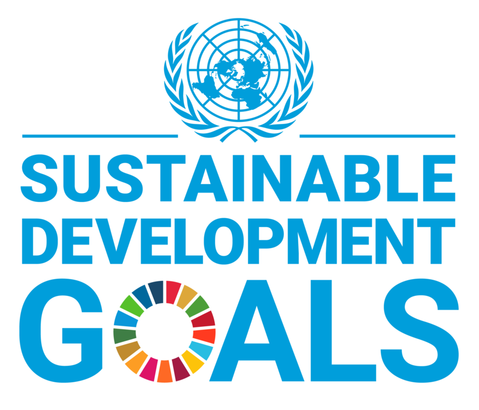
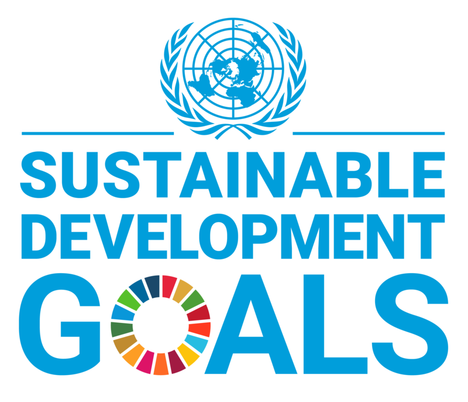

Kesimpulan
SDGs 3 menekankan pentingnya kesehatan dan kesejahteraan bagi semua orang. Indonesia berkomitmen untuk mencapai tujuan ini melalui berbagai program pemerintah, inovasi teknologi, dan pemanfaatan SDM. Hal-hal ini juga menjadi potensi dan peluang tujuan SDGs 3 dapat tercapai dan terwujudkan. Namun meskipun ada potensi dan peluang, tidak menutup kemungkinan dapat terjadi hambatan atau tantangan selama proses yang cukup lama ini. Seperti dari keterbatasan dana khususnya di daerah terpencil, kesadaran masyarakat yang tergolong cukup rendah, serta koordinasi yang belum maksimal. Kita sebagai masyarakat harus sadar atas pentingnya untuk mencapai tujuan ini. Maka dengan itu, peran masyarakat sangat penting dan dapat dilakukan melalui partisipasi aktif dalam kehidupan sehari-hari.
Tercapainya tujuan SDGs 3 juga didukung oleh macam-macam kerja sama seperti bilateral, regional, dan multilateral. Melalui program nyata seperti MoU Kesehatan RI-Tiongkok, ASEAN health cooperation, dan COVAX, Indonesia dapat memperkuat sistem kesehatan, memperluas akses layanan, mengendalikan penyakit, dan meningkatkan kesejahteraan rakyat.